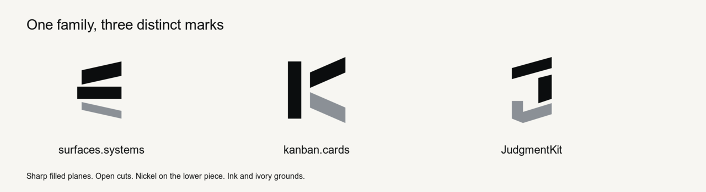
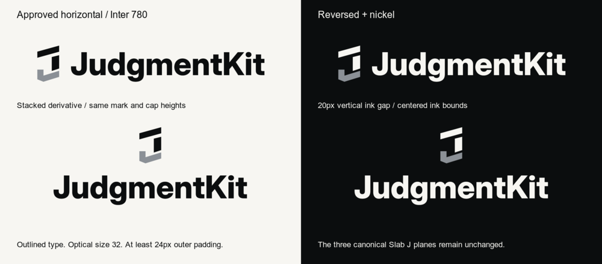

Canonical AExact selected silhouette.Reversed + nickelPrimary treatment on ink.
JudgmentKit in the family

App icon
The primary source is an opaque ink square. These previews apply platform masks.
Square sourceRounded squareCircleMaskable safe circle
Canonical lockups
Inter 780 at optical size 32. The horizontal lockups preserve a 60px visible mark, 38px type cap height, 20px ink gap, and at least 24px outer padding. The outlined SVGs need no runtime font.

The stacked derivative keeps the same mark and cap heights, centers both ink bounds, and uses a 20px vertical ink gap.
16px refinement
The optical derivative aligns vertical edges, widens the silhouette by one pixel, and strengthens the nickel return. The detached J can still read as a hook in isolation.
Responsive 16pxResponsive 32px16px fallback
The responsive SVG uses the optical variant through 20px. Canonical geometry is recommended at 24px and above.
Raster samples above stay at their native pixel dimensions. Scroll horizontally on a small screen.
Color
Ink
#0B0D0E
Ivory
#F7F6F2
Nickel
#8B9096
Motion study
Reduced-motion mode shows the full static mark.